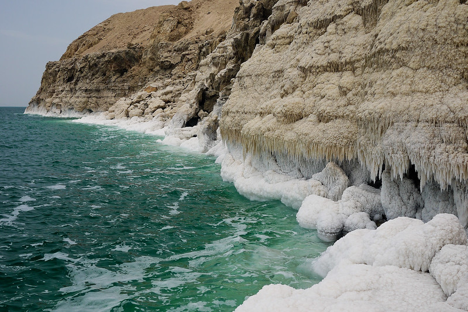

A Little Adventure… An Epically Muddy Day at
the Dead Sea
Last updated on January 2, 2023
After arriving at the Dead Sea in Jordan, I wasn’t prepared for the sheer starkness of
the landscape. My previously conjured images of the Dead Sea were of two varieties:
- An exotic, remote, and barren desert landscape with an inhospitable lake of
water stretching for miles.
- A smiling and slightly accented vendor in any one of America’s super-sized malls
rubbing dark brown Dead Sea mud onto the back of my hand, extolling its many
virtues.

Neither version prepared me for the actuality of the Dead Sea—the region’s bare
landscape was the very element lending beauty. And remote? Not hardly. It’s a mere 45
minute drive from Amman, Jordan’s capital, and surrounded by a handful of significant
religious biblical and Islamic pilgrimage sites. We easily added an overnight here
between our exploring the myths and history of Petra and a sunrise camel ride in Wadi
Rum.
Why is the Dead Sea So Important?
The Dead Sea is a salt lake located in the Jordan Rift Valley and is bordered by Jordan
to the east and Israel and Palestine to the west. It’s a popular tourist spot because of its
unique ecosystem and the many health benefits that are believed to be associated with
its high salt and mineral content. The Dead Sea is also an important source of natural
minerals and is home to a number of industries that rely on its resources.
About the Writer:
Name: Abdallrhman Odeh
Email: aboodwadi80
Live In: Jordan